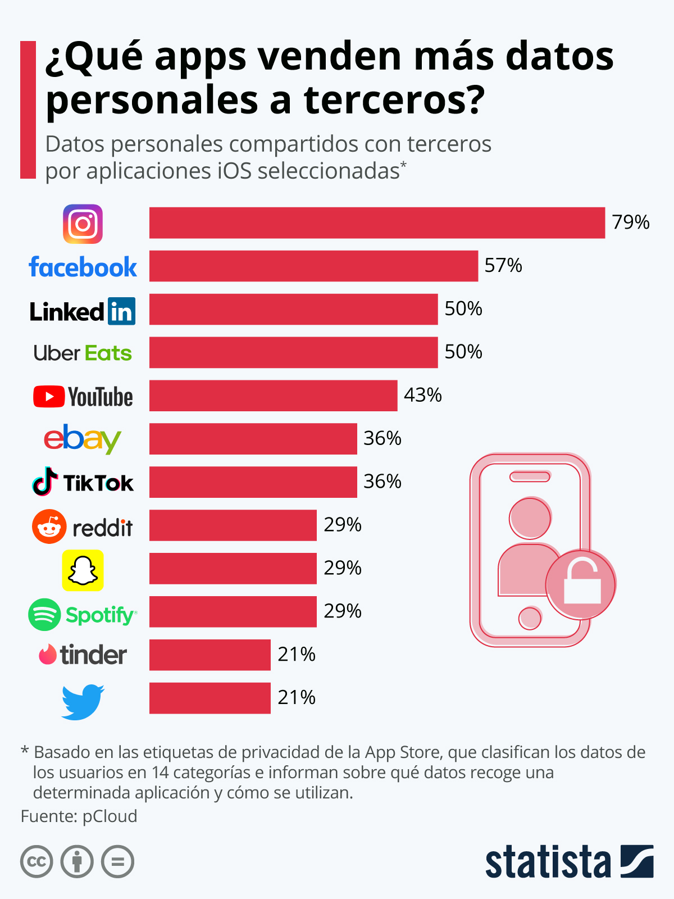

Universidad Veracruzana
Protección de Datos Personales
Fase 1: Fundamentos de la Protección de Datos Personales.

Protección de Datos Personales
Fase 1: Fundamentos de la Protección de Datos Personales.
Protección de Datos Personales Scroll
Fase 1: Fundamentos de la Protección de Datos Personales.
Información general

[1]
Analizar y comprender la relevancia de la Protección de Datos Personales, mediante el fundamento importante de tus datos de identidad y la relevancia de su tratamiento en el contexto de la sociedad del conocimiento en la era de la información digital; los principios rectores que sustenta la regulación de tus datos personales, el aviso de privacidad y tu derecho a ejercer los derechos ARCOP, así como a reconocer que la seguridad de la información individual protege tu privacidad, intimidad y confiabilidad en un ambiente de respeto y cordialidad, con el fin de evitar situaciones de riesgo en lo concerniente a la protección de tu información personal.
Cuando respondes cuestionarios o encuestas bajo la inducción de conocer tu personalidad, estás entregando los datos personales que configuran tu perfil de gustos o preferencias. Esta información, en ciertos casos, servirá para invitarte a realizar compras de bienes o servicios, suscripciones o participación en eventos, pero también, en el peor de los casos, al robo de tu identidad o al saqueo de tus cuentas bancarias.
Desarrollo de los saberes de la Experiencia Educativa
El tratamiento de datos personales es un tema que preocupa y ocupa a los reguladores e instituciones en las últimas décadas, en sus inicios fue poco reglamentado, pero en el último decenio se han creado una serie de normas a partir de la revisión de las primeras iniciativas reguladoras, así como lo expuesto en diversas conferencias en el ámbito global que ponen sobre la mesa la indiscutible relevancia social y económica de la información sobre los datos de las personas.
La regulación sobre tratamiento de datos personales, implica un cambio cultural y estructural que obliga a las instituciones públicas y privadas a revisar sus políticas y procesos respecto al manejo de la información de sus bases de datos y archivos, pues deben establecer reglas obligatorias para recolectar, almacenar, tratar y trasladar tal información sobre las personas naturales.
El tratamiento indebido de los datos personales no sólo pone en riesgo los derechos humanos, sino los sistemas de información de las empresas y organizaciones públicas o privadas. La recolección y uso de los datos es una gestión transversal que está presente en diversas actividades.
Los datos personales son un bien preciado, comprender sus reglas de tratamiento en la era digital, fue y ha sido una necesidad para proteger los derechos humanos y facilitar los negocios en el contexto de una sociedad democrática, la cual debe exigir el respeto y la garantía de las personas.
A continuación, observa el siguiente video Infografía Protección de datos personales y prevención del robo de identidad:
Para conocer el origen y evolución del derecho a la protección de datos personales te presentamos la siguiente línea del tiempo.
Para acceder a la información, haz clic sobre cada botón.
Ahora, te mostramos la siguiente tabla que explica en qué consiste el Derecho a la Protección de Datos Personales, según Estrada A. (s. f.).
|
Es un derecho fundamental de tercera generación que busca la protección de la persona en relación con el tratamiento de su información. |
Poder de disposición y control que faculta a su titular a decidir cuáles de sus datos proporciona a un tercero. Derecho a la Autodeterminación Informativa. |
Derecho que tiene toda persona a conocer y decidir, quién, cómo y de qué manera recaba, utiliza y comparte sus datos personales. |

https://resilientedigital.com/los-datos-caracter-personal-internet-consentimiento/
Para conocer más sobre la protección de datos personales y los niveles de protección, revisa atentamente la siguiente infografía.
A continuación, observa el siguiente cuadro sinóptico en donde se describe la autodeterminación informativa, privacidad e intimidad.
Haz clic en cada elemento para leer el contenido.
Para conocer más sobre este tema, revisa el artículo El derecho a la intimidad y su necesaria inclusión como garantía individual, disponible para su consulta en el siguiente enlace:

Dato personal: Es toda la información que identifica a un individuo, lo hace identificable y lo distingue de los demás.

https://www.facebook.com/SaludDignaMx/posts/10157607711349797/

https://blog.derecho-informatico.org/2018/05/29/clabe-por-que-la-suprema-corte-determino-que-no-es-un-dato-personal-sensible/
Dato personal sensible: Aquellos datos que se refieran a la esfera más íntima de su titular, o cuya utilización indebida puede dar origen a la discriminación o conlleve un riesgo grave para éste (LGPDPPSO, 2017).
En materia de datos personales, existe una clasificación enunciativa, mas no limitativa, presta atención a los datos personales sensibles.
Observa la siguiente infografía e interactúa con sus elementos para identificar los tipos de datos personales.
Los datos personales de cada individuo representan un valor intangible apreciado por instituciones públicas y empresas privadas, pues constituyen el ejercicio de sus funciones y actividades económicas, sociales y políticas. Así, los datos personales adquieren un valor sustantivo en el comercio electrónico como un insumo principal en las transacciones de las empresas digitales.
Valor económico, social y político de los datos personales
Lugo (2021) comenta que:
“En México, apuntó que el costo promedio de un solo registro de datos personales vulnerado, por ejemplo, el Registro Federal de Contribuyentes o el domicilio de un empleado, equivale a 3 mil 135 pesos.
De acuerdo con cifras del Instituto Nacional al Acceso a la Información y Protección de Datos (INAI) están entre $132 a $235 MXN. Si esto lo multiplicamos por bases de datos que llegan a tener hasta 47,000 registros estaríamos hablando de que la base de datos tendría un valor económico de$11, 045,000.00.
Durante el 2021 las empresas mexicanas realizaron inversiones por 2.3 millones de dólares en promedio, enproyectos orientados a la privacidad. En dicho informe se revela que la gran mayoría de las empresas, no sólo en México sino a nivel global, confían en que la privacidad forma parte integral de su cultura y que se trata de un imperativo de negocio, más no un mero ejercicio de cumplimiento. A la vez, están convencidas de que, si no protegen los datos de sus clientes, estos no adquirirán sus productos.
Es importante recordar que cualquier interacción que tengamos en internet, ya sea por teléfono móvil, laptop, televisor inteligente, etc., implica dejar una huella digital que puede rastrearse de regreso hacia nosotros y para evitar problemas, como usuarios debemos revisar las condiciones impuestas al momento de compartir datos personales, mientras que para las empresas es fundamental concientizar a sus colaboradores sobre la importancia de la legislación, a fin de que estos comprendan la responsabilidad de lidiar con datos personales de los usuarios”.
Valor económico
INAI (2015) asume que los datos personales es una clase de información que progresivamente ha cobrado mayor relevancia social y económica y cita a Kuneva (2009) y Schwartz (2004): De acuerdo con Kuneva recientemente se les ha tildado de ser “el nuevo petróleo de la Internet y la nueva moneda del mundo digital”. Por su parte Schwartz argumenta que en la práctica “la información personal es una importante moneda del milenio. El valor monetario de esta clase de información es grande y sigue creciendo. Las empresas americanas están rápidamente reorientando sus esfuerzos para aprovechar y obtener utilidades de esta tendencia”.
Valor social
Además, el INAI afirma que el valor de los datos no es sólo económico sino también social, científico, político y cultural.Lo que se decida sobre la protección de los datos determinará el tipo de sociedad en donde viviremos. Puede ser una sociedad en la que prima la protección de los derechos humanos sobre los negocios o viceversa. O puede ser una sociedad en donde se respeten adecuadamente los derechos y se creen condiciones sensatas para el desarrollo de las empresas y la innovación.
A continuación, observa los siguientes videos:
Ahora, observa la siguiente imagen y analiza los datos que se exponen.
Existe un alto riesgo al que nos exponemos al proporcionar datos personales por Internet.
Siempre que necesites aprovechar las bondadesde la tecnología de redes, la mayoría de los programas informáticos como: redes sociales, buscadores de información, apps o aplicaciones, o cualquier otro tipo de software, te pedirán tus datos personales, mismos que al acumularse van creando bases de datos con miles o millones de ellos, pues es el principal activo de estas empresas. Sin embargo, así como tienen la responsabilidad de protegerlos, también pueden usarlos indebidamente para infinidad de ilícitos con fines de lucro.
Observa la siguiente presentación sobre dos casos de uso indebido de datos personales: Robo de identidad y ciberacoso y algunas recomendaciones para evitarlos.
Para ver la información, haz clic en la flecha de la derecha.
Observa la siguiente presentación acerca de dos casos de uso indebido de datos personales: ciberacoso y robo de identidad.
Para ver la información, haz clic en la flecha de la derecha.
Evidencias de desempeño
Fuentes de información